مقدمة
يعتبر تنظيف الكنب بالرياض من أكثر الخدمات المنزلية طلبًا، لأن الكنب هو أكثر قطعة أثاث استخدامًا داخل المنزل أو الفيلا أو المكتب، حيث يجلس عليه أفراد الأسرة يوميًا، ويستقبل الضيوف، ويتعرض باستمرار للغبار والأتربة والبقع والروائح المختلفة.
ومع طبيعة الأجواء في مدينة الرياض وكثرة الغبار، يصبح الكنب معرضًا لتراكم الأتربة والبكتيريا والمواد الدقيقة التي لا يمكن ملاحظتها بالعين المجردة، مما يؤثر على مظهره، ويقلل من عمره الافتراضي، وقد ينعكس أيضًا على جودة الهواء داخل المنزل.
ولهذا فإن غسيل الكنب بالرياض بصورة احترافية لا يهدف فقط إلى إزالة البقع، بل يشمل تنظيف الأقمشة، وتعقيمها، وإزالة الروائح، والمحافظة على ألوان الكنب وجودة النسيج، باستخدام معدات حديثة ومنتجات تنظيف آمنة تناسب جميع أنواع الأقمشة.
لماذا يحتاج الكنب إلى تنظيف دوري؟
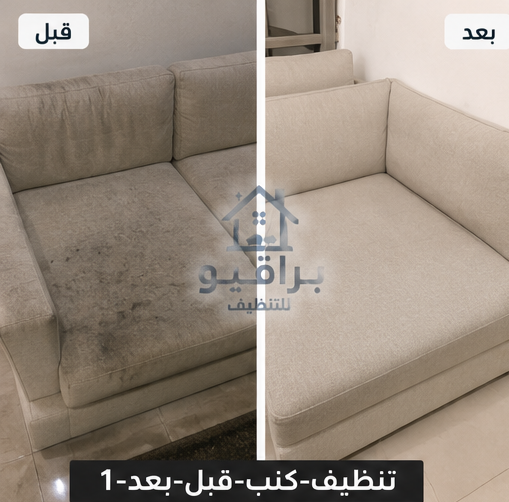
قبل وبعد التنظيف
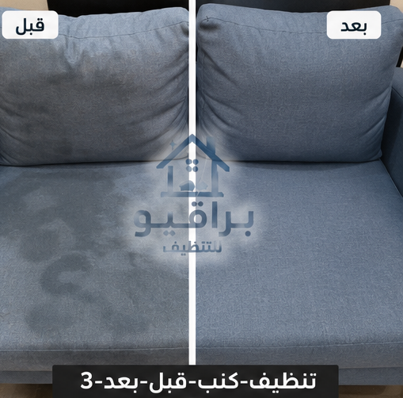
قبل وبعد التنظيف

قبل وبعد التنظيف
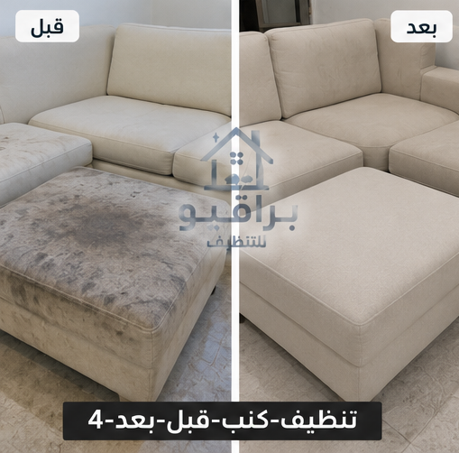
قبل وبعد التنظيف
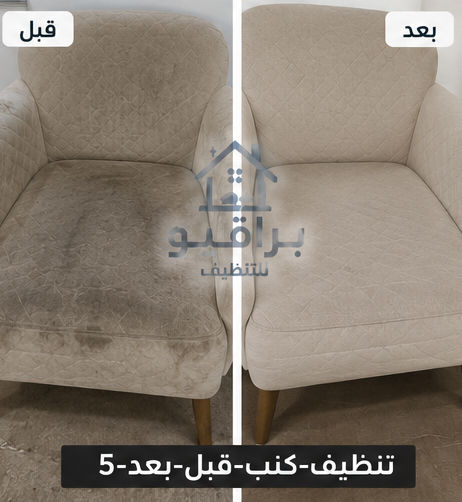
قبل وبعد التنظيف
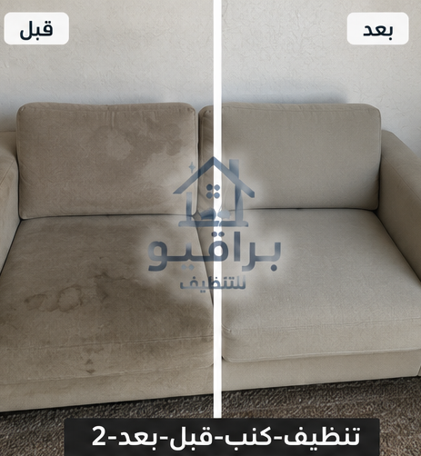
قبل وبعد التنظيف
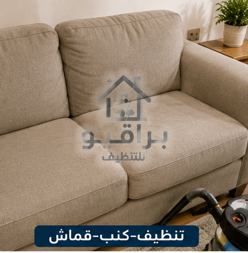
تنظيف الكنب القماش
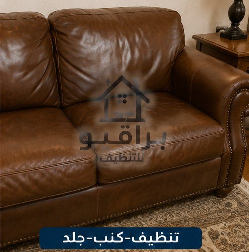
تنظيف الكنب الجلد
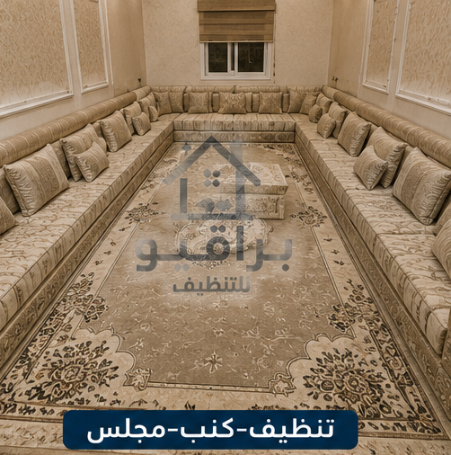
تنظيف المجالس
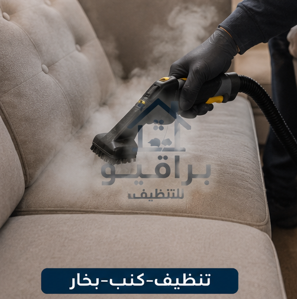
التنظيف بالبخار
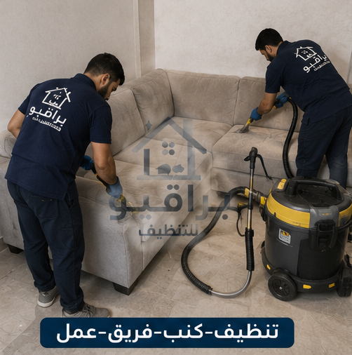
فريق العمل
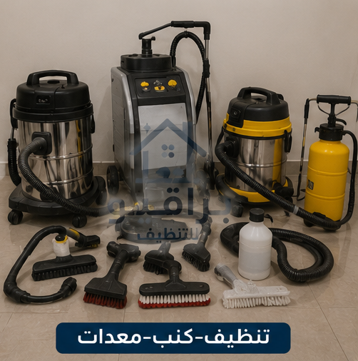
المعدات
يتعرض الكنب للاستخدام اليومي، ويستقبل الغبار القادم من النوافذ والأبواب، كما قد يتعرض لبقع المشروبات أو الطعام أو آثار الاستخدام المستمر. ومع مرور الوقت تبدأ الأوساخ بالتراكم داخل أنسجة القماش، وهو ما قد يؤدي إلى:
- تغير لون الكنب.
- ظهور البقع.
- انبعاث روائح غير مرغوبة.
- تراكم الغبار.
- انخفاض جودة الهواء داخل المنزل.
- تقليل العمر الافتراضي للكنب.
أهمية الاستعانة بشركة تنظيف كنب بالرياض
قد تبدو عملية تنظيف الكنب بسيطة، لكنها تحتاج إلى معرفة نوع القماش، واختيار طريقة التنظيف المناسبة، واستخدام مواد لا تؤثر على اللون أو النسيج. لذلك فإن الاعتماد على شركة تنظيف كنب بالرياض يضمن الحصول على تنظيف احترافي باستخدام معدات متخصصة تساعد على إزالة البقع والأوساخ مع المحافظة على جودة الكنب.
خدمات تنظيف الكنب بالرياض
- تنظيف الكنب القماش.
- تنظيف الكنب المخمل.
- تنظيف الكنب الجلد.
- تنظيف المجالس.
- تنظيف الأرائك.
- إزالة الغبار.
- إزالة البقع.
- إزالة الروائح.
- تعقيم الكنب.
- تنظيف الوسائد.
- تنظيف مساند الذراع.
- تنظيف قواعد الكنب.
- تنظيف الزوايا.
- تجفيف الكنب بعد التنظيف.
🛋️ كنبك محتاج تنظيف عميق؟
📱 احجز موعد الآنتنظيف الكنب بالبخار بالرياض
يعد تنظيف الكنب بالبخار بالرياض من أكثر الطرق استخدامًا، حيث يساعد البخار على إزالة الأوساخ العالقة داخل الأقمشة، مع المحافظة على جودة النسيج. ومن أهم مزايا التنظيف بالبخار: إزالة الأوساخ بعمق، المساعدة في إزالة الروائح، تقليل الرطوبة الزائدة عند استخدام المعدات المناسبة، المحافظة على مظهر الكنب، تنظيف معظم أنواع الأقمشة بطريقة فعالة.
تنظيف الكنب القماش
الكنب القماش يحتاج إلى عناية خاصة، لأن الأقمشة تمتص الغبار والبقع بسرعة. تشمل الخدمة: إزالة الغبار، معالجة البقع، تنظيف القماش، تعقيم الكنب، تجفيف الكنب، إعادة ترتيب الوسائد.
تنظيف الكنب المخمل
الكنب المخمل يتميز بمظهره الفاخر، لكنه يحتاج إلى طريقة تنظيف مناسبة للحفاظ على ملمسه ولونه. ويتم استخدام أدوات مخصصة ومنتجات لطيفة تساعد على تنظيف القماش دون التأثير على نعومته أو مظهره.
تنظيف الكنب الجلد
يحتاج الكنب الجلد إلى عناية مختلفة عن الأقمشة، حيث يتم تنظيفه باستخدام منتجات مخصصة تساعد على إزالة الأوساخ مع المحافظة على مرونة الجلد ولمعانه.
غسيل الكنب بالبخار بالرياض
يُعد غسيل الكنب بالبخار بالرياض من أكثر الخدمات طلبًا، حيث يساعد البخار على الوصول إلى أعماق الأنسجة وإزالة الأوساخ العالقة بطريقة فعالة، مع المحافظة على خامة الكنب. ومن أبرز مزايا التنظيف بالبخار: تنظيف عميق للأقمشة، إزالة الغبار المتراكم، المساعدة في التخلص من الروائح، الحفاظ على ألوان الكنب، تقليل الحاجة إلى استخدام كميات كبيرة من المياه.
تنظيف المجالس والكنب بالرياض
تعتبر المجالس من أكثر الأماكن استقبالًا للضيوف، ولذلك تحتاج إلى تنظيف دوري للحفاظ على مظهرها الأنيق. تشمل الخدمة: تنظيف المجالس العربية، تنظيف الكنب الحديث، تنظيف الأرائك، تنظيف الوسائد، إزالة الغبار، إزالة البقع، ترتيب الجلسات بعد الانتهاء.
تنظيف الكنب في الفلل
تحتوي الفلل غالبًا على عدد كبير من المجالس وغرف الجلوس، ولذلك تحتاج إلى خطة تنظيف متكاملة تشمل جميع قطع الكنب والمقاعد مع الاهتمام بالتفاصيل الدقيقة.
تنظيف الكنب في الشقق
حتى في الشقق ذات المساحات الصغيرة، يتعرض الكنب للاستخدام اليومي، ولذلك يساعد التنظيف المنتظم على الحفاظ على نظافته وإطالة عمره الافتراضي.
تنظيف كنب المكاتب والشركات
لا يقتصر تنظيف الكنب على المنازل فقط، بل يشمل أيضًا: المكاتب، الشركات، العيادات، صالات الانتظار، المعارض، المؤسسات. ويتم تنظيف الكنب بطريقة تساعد على المحافظة على مظهر المكان أمام العملاء والزوار.
إزالة الروائح من الكنب
قد تنتج الروائح عن الاستخدام المستمر أو انسكاب السوائل أو عدم تنظيف الكنب لفترات طويلة. يساعد التنظيف الاحترافي على التخلص من الروائح غير المرغوبة وإعادة الانتعاش إلى الأقمشة باستخدام الطرق المناسبة لكل نوع من أنواع الكنب.
✨ كنبك فيه بقع أو روائح؟
📱 تواصل معنا واتسابتنظيف الكنب الفاتح اللون
يحتاج الكنب الأبيض والبيج والألوان الفاتحة إلى عناية خاصة بسبب ظهور البقع بسرعة. ولهذا يتم استخدام طرق تنظيف مناسبة تساعد على إزالة الأوساخ مع المحافظة على لون القماش وعدم التأثير على جودته.
تنظيف الكنب الداكن
الكنب الداكن يحتاج أيضًا إلى تنظيف دوري لإزالة الغبار الذي قد يكون أكثر وضوحًا على بعض الخامات، مع المحافظة على اللون الأصلي والنسيج.
كيف تحافظ على الكنب نظيفًا لأطول فترة؟
- تنظيف الغبار عن الكنب مرة أو مرتين أسبوعيًا.
- معالجة أي بقعة فور حدوثها.
- تجنب تناول الأطعمة والمشروبات فوق الكنب قدر الإمكان.
- تهوية الغرفة بانتظام.
- عدم تعريض الكنب لأشعة الشمس المباشرة لفترات طويلة.
- إجراء تنظيف احترافي كل عدة أشهر.
أنواع الكنب التي نقوم بتنظيفها
- تنظيف الكنب القماش.
- تنظيف الكنب المخمل.
- تنظيف الكنب الجلد الطبيعي.
- تنظيف الكنب الجلد الصناعي.
- تنظيف الأرائك.
- تنظيف المجالس العربية.
- تنظيف الكراسي المنجدة.
- تنظيف زوايا الكنب (L Shape).
- تنظيف كنب المكاتب.
- تنظيف كنب الفنادق.
تنظيف الكنب في الفلل والقصور
تحتوي الفلل والقصور غالبًا على عدد كبير من المجالس وغرف الضيوف، لذلك تحتاج إلى فريق عمل متخصص قادر على تنظيف جميع قطع الكنب باحترافية مع المحافظة على الأقمشة والتطريزات الفاخرة.
تنظيف كنب المجالس العربية
تتميز المجالس العربية بتصاميمها الكبيرة واستخدامها المتكرر، ولذلك تحتاج إلى عناية خاصة للحفاظ على مظهرها. تشمل الخدمة: تنظيف الأقمشة، إزالة الغبار، تنظيف الوسائد، تنظيف المساند، إزالة البقع، ترتيب المجلس بالكامل.
فوائد غسيل الكنب بالبخار
- تنظيف الأنسجة بعمق.
- المساعدة في إزالة الروائح.
- تقليل تراكم الغبار.
- المحافظة على مظهر الكنب.
- الوصول إلى الأماكن الدقيقة داخل الأقمشة.
- نتائج تدوم لفترة أطول عند العناية الصحيحة.
متى يحتاج الكنب إلى تنظيف احترافي؟
- وجود بقع واضحة.
- تغير لون القماش.
- تراكم الغبار.
- ظهور روائح غير مرغوبة.
- الاستخدام اليومي المكثف.
- مرور عدة أشهر دون تنظيف عميق.
خدمات تنظيف الكنب في جميع أحياء الرياض
تقدم براقيو خدمات تنظيف الكنب بالرياض في جميع أحياء العاصمة: حي النرجس، حي الياسمين، حي الملقا، حي العارض، حي حطين، حي الصحافة، حي الربيع، حي الملك فهد، حي العليا، حي السليمانية، حي الروضة، حي قرطبة، حي الرمال، حي المونسية، حي القادسية، حي اليرموك، حي الخليج، حي النسيم، حي الشفا، حي السويدي، حي بدر، حي العزيزية، حي ظهرة لبن، حي الدار البيضاء.
إزالة البقع الصعبة من الكنب
تختلف أنواع البقع باختلاف سببها، مثل: بقع القهوة، الشاي، العصائر، الطعام، الشوكولاتة، الحبر، آثار الاستخدام اليومي. ويتم اختيار طريقة التنظيف المناسبة حسب نوع القماش وطبيعة البقعة، مع الحرص على المحافظة على لون الكنب وجودة النسيج.
الأسئلة الشائعة
كم مرة يجب تنظيف الكنب؟
يفضل إجراء تنظيف احترافي كل 6 إلى 12 شهرًا، وقد تقل المدة في حال الاستخدام المكثف أو وجود أطفال.
هل يناسب التنظيف جميع أنواع الكنب؟
نعم، مع اختيار الطريقة المناسبة لكل نوع من الأقمشة أو الجلد.
كم يستغرق تنظيف الكنب؟
يعتمد الوقت على عدد القطع وحجمها وحالة الكنب، لكن يتم تنفيذ العمل بكفاءة مع مراعاة الجودة.
هل يساعد تنظيف الكنب في تحسين رائحة المنزل؟
نعم، إزالة الأوساخ والغبار والبقع، مع التعقيم عند الطلب، يساهم في منح الكنب رائحة أكثر انتعاشًا.
فريق عمل مدرب
عمالة محترفة ومدربة على أعلى مستوى
مواد آمنة
منتجات تنظيف مناسبة لجميع أنواع الأقمشة
سرعة في الإنجاز
خدمة سريعة مع الالتزام بالمواعيد
ضمان الجودة
نتائج احترافية تدوم طويلاً
براقيو لخدمات تنظيف الكنب بالرياض
إذا كنت تبحث عن أفضل شركة تنظيف كنب بالرياض تجمع بين الجودة والاحترافية والاهتمام بالتفاصيل، فإن براقيو تقدم حلولًا متكاملة للعناية بجميع أنواع الكنب والمجالس والأرائك. ندرك أن الكنب ليس مجرد قطعة أثاث، بل هو جزء أساسي من راحة المنزل واستقبال الضيوف، لذلك نحرص على تقديم خدمة تنظيف دقيقة تبدأ بفحص نوع القماش وحالة الكنب، ثم اختيار الطريقة المناسبة للتنظيف، ومعالجة البقع، وتنظيف الأنسجة، والمساعدة في إزالة الروائح، مع تجفيف الكنب بالطريقة المناسبة لضمان أفضل نتيجة.
نصائح للحفاظ على الكنب بعد التنظيف
- تنظيف الغبار بانتظام باستخدام أدوات مناسبة.
- معالجة البقع فور حدوثها دون فرك عنيف.
- عدم تعريض الكنب لأشعة الشمس المباشرة لفترات طويلة.
- تدوير الوسائد بين الحين والآخر لتوزيع الاستخدام.
- تهوية المنزل يوميًا لتحسين جودة الهواء.
- تجنب استخدام منظفات غير مخصصة لنوع القماش.
- إجراء تنظيف احترافي بشكل دوري حسب معدل الاستخدام.
خاتمة
إن العناية بالكنب بشكل دوري لا تحافظ على مظهره الأنيق فحسب، بل تساعد أيضًا في إطالة عمره والحفاظ على جودة أقمشته وراحة أفراد الأسرة. ومع كثرة الاستخدام اليومي وتعرض الكنب للغبار والبقع، يصبح التنظيف الاحترافي جزءًا مهمًا من العناية بالمنزل. إذا كنت ترغب في استعادة نظافة الكنب، وإزالة البقع، وتجديد مظهر المجالس والأرائك، فإن فريق براقيو جاهز لتقديم خدمة احترافية تغطي جميع أحياء مدينة الرياض.
نقدم خدمة تنظيف المكيفات في جميع أحياء الرياض: حي النرجس، حي الياسمين، حي الملقا، حي العارض، حي حطين، حي الصحافة، حي الربيع، حي الغدير، حي العقيق، حي المروج، حي الورود، حي النفل، حي الندى، حي الفلاح، حي التعاون، حي الازدهار، حي قرطبة، حي الرمال، حي المونسية، حي القادسية، حي اليرموك، حي الخليج، حي الروضة، حي إشبيلية، حي الجزيرة، حي النهضة، حي الحمراء، حي غرناطة، حي الريان، حي الربوة، حي القدس، حي الروابي، حي السويدي، حي ظهرة لبن، حي لبن، حي طويق، حي العريجاء، حي البديعة، حي شبرا، حي سلطانة، حي الشفا، حي بدر، حي العزيزية، حي الدار البيضاء، حي المنصور، حي الحزم، حي نمار، حي أحد، حي عكاظ، حي المروة، حي العليا، حي السليمانية، حي الملز، حي الفوطة، حي المربع، حي البطحاء، حي الديرة، حي السفارات.